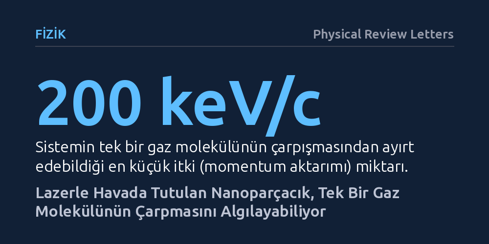

FIZIK · Physical Review Letters · 2026-10-21
Araştırmacılar, lazer ışığıyla havada asılı tutulan bir nanoparçacığa tekil gaz moleküllerinin çarpmasıyla aktarılan momentumu deneysel olarak ölçmeyi başardı. Kripton ve ksenon gibi gazlarla yapılan deney, 200 keV/c seviyesindeki minik itkileri yakalayarak moleküler çarpışmalara dayalı yeni bir basınç sensörü kavramını kanıtladı.
Trilyonlarca molekülün ortalamasıyla tanımlanan gaz basıncının, artık tek tek moleküllerin mekanik vuruşları sayılarak doğrudan ve temel fizik ilkeleriyle ölçülebileceğini gösteriyor.

Günlük hayatta ya da endüstriyel vakum sistemlerinde gaz basıncını ölçtüğümüzde, aslında sayısız molekülün yüzeylere yaptığı trilyonlarca rastgele çarpışmanın toplu ortalamasını hissederiz. Bir odadaki havanın ya da yarı iletken üretimindeki yüksek vakum odalarının basıncı, bugüne kadar hep bu istatistiksel parçacık yığınının oluşturduğu genel mekanik kuvvet üzerinden belirlendi. Ancak gaz ortamını meydana getiren tek bir molekülün gelip bir yüzeye vurması ve o temas sırasında aktardığı minik hareket miktarı, mevcut standart ölçüm aygıtlarının hassasiyet sınırlarının çok ötesinde kalıyordu.
Fizikçiler uzun süredir şu sorunun peşindeydi: Bir yüzeye çarpan tek bir gaz molekülünün aktardığı momentumu doğrudan ölçecek kadar hassas bir düzenek kurulabilir mi? Eğer bu başarılabilirse, hem gaz basıncını dolaylı kalibrasyon eğrilerine ihtiyaç duymadan doğrudan temel fizik ilkeleriyle ölçmek hem de bilinmeyen temel parçacık etkileşimlerini gözlemlemek adına tamamen yeni bir kapı aralanabilirdi.
Bu olağanüstü algılama eşiğine ulaşmak için araştırmacılar optomekanik yöntemlerden yararlandı. Odaklanmış lazer ışınlarının uyguladığı radyasyon basıncı sayesinde, mikroskobik boyutlardaki tek bir nanoparçacık hiçbir mekanik dayanak olmadan, boşlukta tamamen havada asılı tutuldu. Bu optik tuzaklama tekniği, parçacığın dış dünyadan yalıtılmış ama lazerle kusursuz biçimde izlenebilen minik salınımlar yapmasını sağladı.
Deney düzeneğinde bu asılı nanoparçacık, yüksek vakumlu bir test odacığına yerleştirildi. Ardından odaya kontrollü biçimde kripton (Kr), ksenon (Xe) ve kükürt heksaflorür (SF₆) gazları gönderildi. Havada süzülen parçacığa çarpan her bir gaz molekülü parçacığa çok küçük bir itki vererek onun titreşiminde ani mekanik sapmalara yol açtı. Lazer ışığının dedektörlerde oluşturduğu girişim desenleri kaydedilerek bu mikroskobik sapmalar ayrıştırıldı ve tekil çarpışmaların şiddeti modellendi.
Deney sonuçları, lazerle havada tutulan sistemin teorik fizik beklentileriyle tam bir uyum içinde çalıştığını kanıtladı. Araştırma ekibi, 200 keV/c kadar küçük itki sinyallerini gürültüden ayırarak başarıyla yeniden oluşturabildi. Bu hassasiyet düzeyi, tek bir ksenon ya da kripton atomunun nanoparçacığa çarpıp sekerken bıraktığı son derece küçük momentum aktarımının doğrudan yakalanabildiği anlamına geliyor.
Ayrıca gözlemlenen çarpışma frekansları, ortamdaki gazların kısmi basınçlarını yüksek bir doğrulukla ortaya koydu. Parçacığın hareket spektrumundan elde edilen veriler, yalnızca ortam basıncını değil, havada duran parçacığın yüzey özelliklerini ve yüzey sıcaklığını da son derece hassas biçimde açığa çıkardı. Böylece optik olarak asılı parçacık, hem bağımsız bir basınç sensörü hem de mikroskobik bir yüzey termometresi gibi çalışabileceğini gösterdi.
Elde edilen bulgular, doğrudan tekil gaz çarpışmalarının sayılmasına dayanan yeni nesil bir birincil basınç sensörünün kavramsal kanıtını sunuyor. Mevcut endüstriyel vakum sensörleri zamanla kalibrasyon kaybına uğrarken veya gaz cinsine göre karmaşık düzeltmeler gerektirirken, doğrudan molekül vuruşlarını sayan bu yaklaşım ölçüm standartlarını temelden değiştirebilecek bir potansiyele sahip.
Bunun da ötesinde, ulaşılan 200 keV/c düzeyindeki momentum hassasiyeti, optomekanik sensörlerin temel parçacık fiziğinde yeni bir keşif aracına dönüşebileceğini gösteriyor. Henüz gizemini koruyan karanlık madde parçacıkları veya zayıf etkileşimli yeni fiziksel kuvvetler, gelecekte bu tür ultra duyarlı askıda parçacık sensörleriyle doğrudan aranabilir. Deney her ne kadar laboratuvar ortamında belirli gazlarla sınırlı olsa da, mikroskobik kuvvet algılama teknolojisinde önemli bir kilometre taşını temsil ediyor.